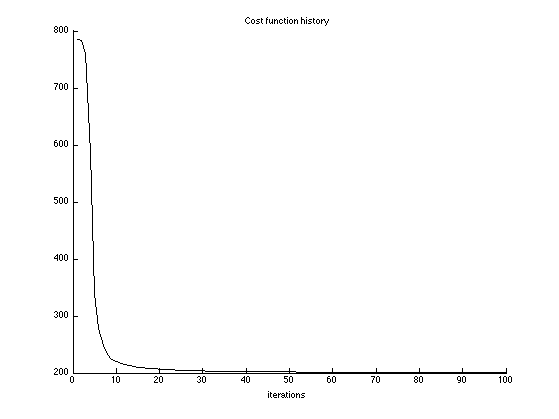
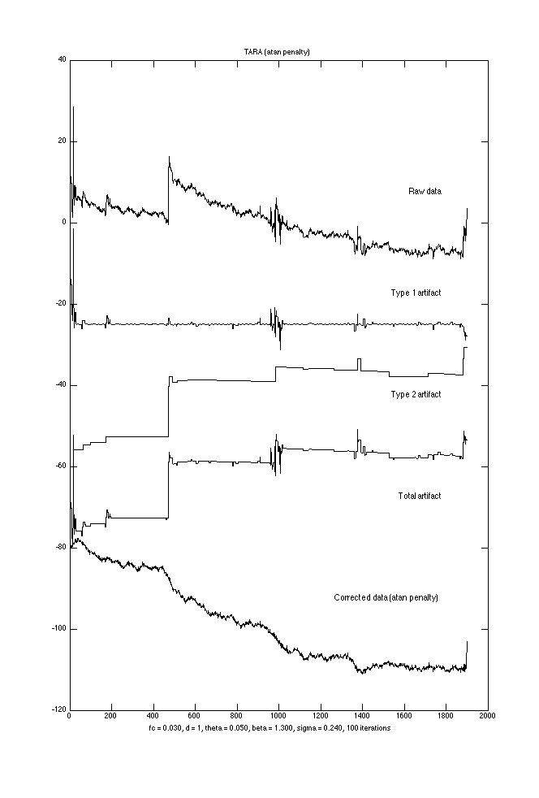

TARA_Example1: Transient Artifact Reduction Algorithm (TARA)
TARA is designed to remove step and spike artifacts from data.
Contents
Start
clear % close all set(0, 'DefaultAxesFontSize', 9);
Load data
y = load('data/wl2_col38.txt'); N = length(y); n = 1:N; figure(1) clf plot(n, y); box off title('Data')

Set parameters
% Filter parameters % fc : cut-off frequency (cycles/sample) (0 < fc < 0.5); % fc = 0.04; fc = 0.03; % d : filter order parameter (d = 1, 2, or 3) d = 1; % ps : pseudo sigma (pseudo noise) ps = 0.24; % theta, beta : shape parameters theta = 0.05; beta = 1.3;
Run TARA
TARA: Transient artifact reducation algortithm
Nit = 100; % Run TARA [x1, x2, f, cost] = tara2_L1(y, d, fc, theta, beta, ps, Nit); txt = sprintf('fc = %.3f, d = %d, theta = %.3f, beta = %.3f, sigma = %.3f, %d iterations', fc, d, theta, beta, ps, Nit);
Cost function history
figure(1) clf plot(1:Nit, cost) xlabel('iterations') title('Cost function history') box off
Display output
signals = [y x1 x2-5 x1+x2 y-x1-x2+25];
labels = {'Raw data','Type 1 artifact', 'Type 2 artifact', 'Total artifact', 'Corrected data (L1 norm penalty)'};
M = length(labels);
gap = 25;
figure(2)
clf
plot(n, bsxfun(@plus, -(0:M-1)*gap, signals), 'black')
tt = text(1800*ones(1,M), gap*(0.3-(0:M-1)), labels);
set(tt, 'HorizontalAlignment', 'right')
title('TARA (L1 norm penalty)')
xlabel( txt )
orient tall
print -dpdf figures/TARA_Example1_fig1

TARA with non-convex penalty
pen = 'atan'; r = 0.5; % Initialize with L1 solution [x1, x2, f, cost_, u1, u2] = tara2(y, d, fc, theta, beta, ps, 'L1', 0, 0, 0, Nit); [x1_ncvx, x2_ncvx, f_ncvx, cost_ncvx] = tara2(y, d, fc, theta, beta, ps, pen, r, r, r, Nit, u1, u2); txt2 = sprintf('%s penalty, r0 = %.3f, r1 = %.3f, r2 = %.3f', pen, r, r, r);
Display output
signals = [y x1_ncvx x2_ncvx-10 x1_ncvx+x2_ncvx-5 y-x1_ncvx-x2_ncvx+20];
labels = {'Raw data','Type 1 artifact', 'Type 2 artifact', 'Total artifact', 'Corrected data (atan penalty)'};
M = length(labels);
gap = 25;
figure(2)
clf
plot(n, bsxfun(@plus, -(0:M-1)*gap, signals), 'black')
tt = text(1800*ones(1,M), gap*(0.3-(0:M-1)), labels);
set(tt, 'HorizontalAlignment', 'right')
title('TARA (atan penalty)')
xlabel( txt )
orient tall
print -dpdf figures/TARA_Example1_fig2
 set(0, 'DefaultAxesFontSize', 'remove');